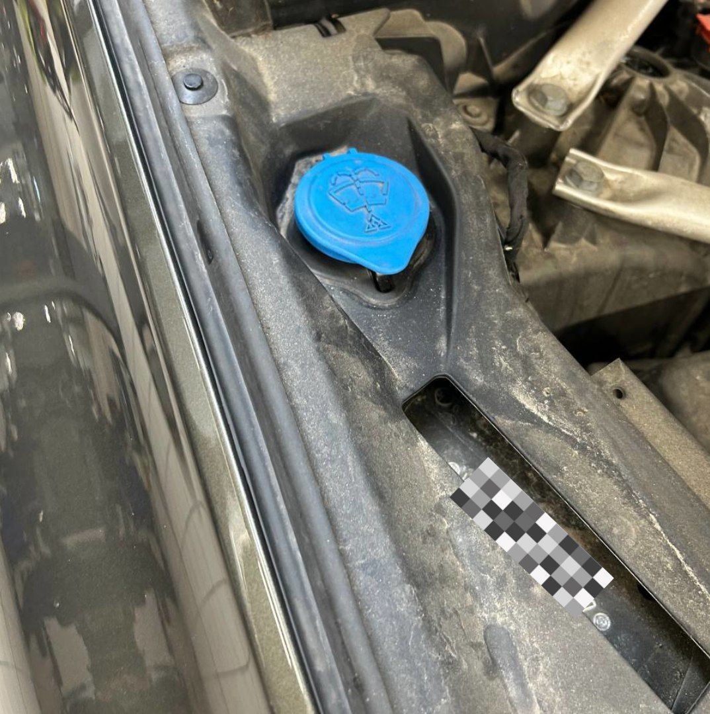
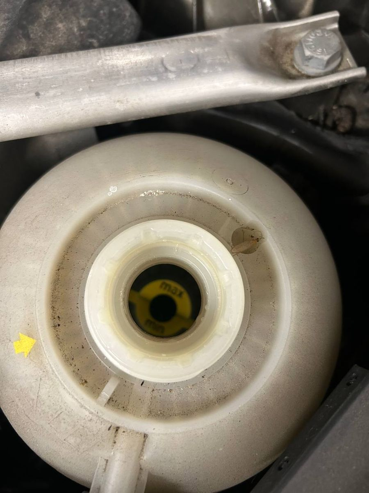
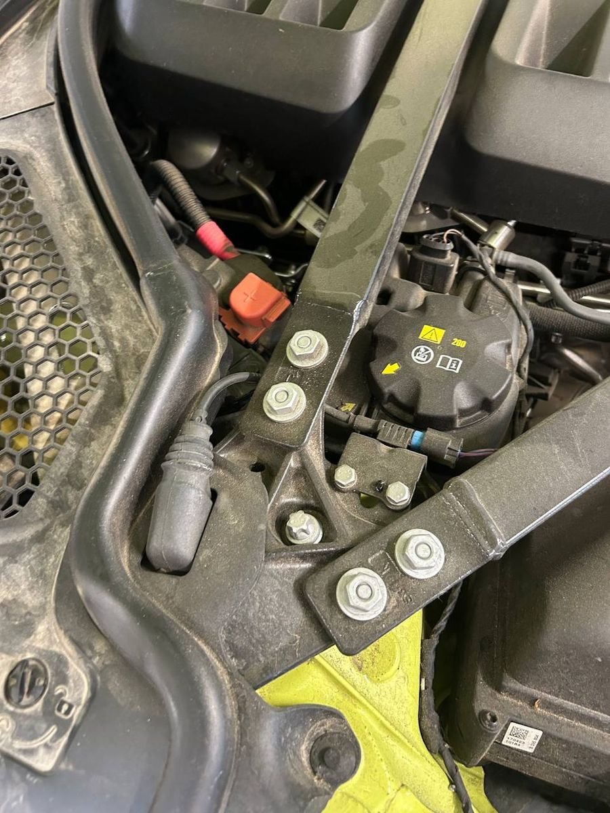

Home / Fluids and filters
What's Under the Hood of a BMW: Where Everything Is
Quick answer
Washer fluid has a blue cap with a wiper symbol, coolant goes in at two separate fillers on this car, engine oil goes in through the filler cap on the engine, the positive jump-start terminal has a red cover marked +, and the air filters sit in the two black housings at the front. Layouts differ between models, so use the numbered photo as a guide and your manual to confirm.

The numbered photo
The photo below shows the engine bay of a BMW M model. Layouts differ between generations and engines, but the same parts are on almost every BMW, usually with similar caps and symbols. The numbers on the photo match the list under it.
- Washer fluid filler. Blue cap with a wiper symbol.
- Coolant fillers. On this car coolant goes in at two places, both marked 2. Only open them on a cold engine.
- Engine oil filler. This is where oil goes into the engine.
- Positive terminal for jump-starting. Red cover marked +.
- Air filters. Two black housings, one on each side, both marked 5.
Washer fluid
This is the easiest one: the blue cap with the wiper symbol. Use proper washer fluid rather than plain water, especially in winter, when water can freeze in the lines.

Coolant
The coolant fillers have a cap with a warning symbol. On this car there are two of them, both marked 2 in the photo. Check the level only when the engine is completely cold. In this close-up, the MIN and MAX marks are visible inside the filler neck.

Safety note. Never open the coolant cap on a hot engine. The system is pressurized and can spray scalding coolant.
Engine oil
The filler cap on the engine is for adding oil, not for checking the level. Many recent BMWs have no dipstick and show the oil level on the dashboard or in the menu, so follow your manual. Only add the oil specification your car calls for.
The jump-start terminal
Many BMWs keep the battery in the trunk or elsewhere, so there is a dedicated positive terminal under the hood for jump-starting. It has a red cover marked +.

The order of connection matters. See BMW Jump-Start Points: Where to Connect the Cables.
Air filter housings
The two black boxes at the front, both marked 5, hold the engine air filters. Replacing them is usually a short job, but fasteners differ by model. Check how yours opens before you start.
FAQ
Where is the oil dipstick on a BMW?
Many recent BMWs have no dipstick. The level is shown on the dashboard or in the menu. Check your manual.
Which cap is the coolant on a BMW?
The cap on the translucent expansion tank, with a warning symbol. Only open it on a cold engine.
Can I use any washer fluid?
Use washer fluid made for the purpose, and use a winter type if it can freeze. Don't use plain water in freezing weather.
Where do I connect jumper cables on a BMW?
Use the positive terminal under the hood with the red + cover, and the designated grounding point. See the jump-start guide.
Is the layout the same on every BMW?
No. The parts are similar, but positions and covers differ between models. Always confirm with your manual.
This guide is general information based on personal experience, not professional advice. Check your own car's manual for exact specs and read the disclaimer before starting any job.